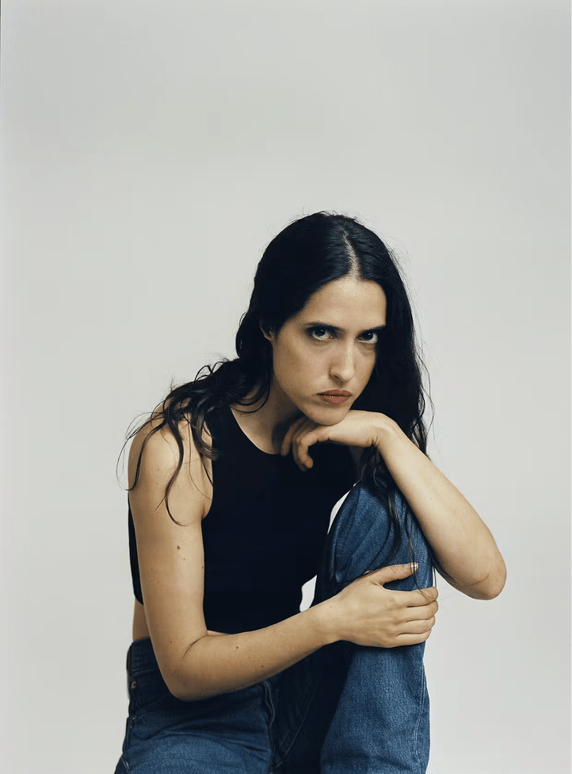
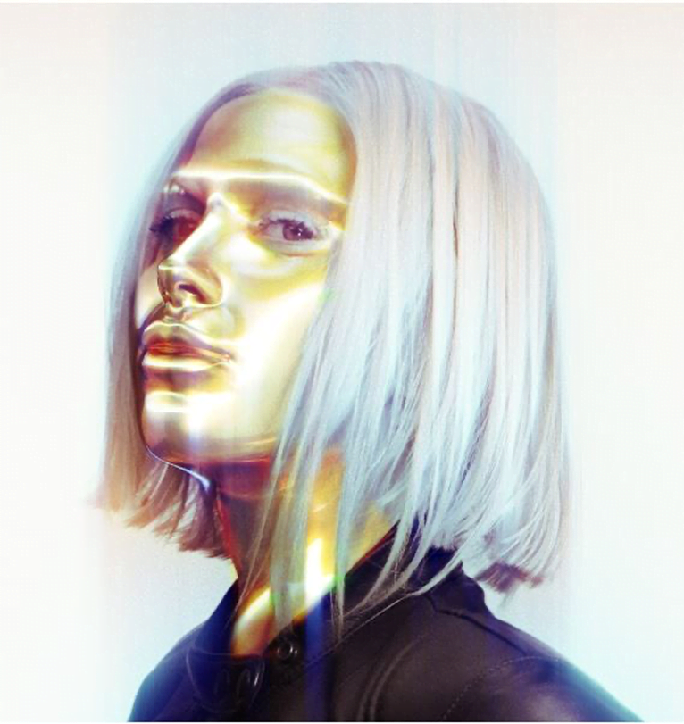
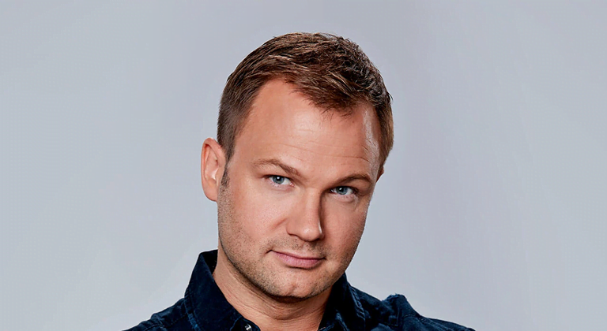

Артисты
-
Berlin,DeutchlandМосква,Россия
-
Наши артист_ки базируются в разных городах и странах, у каждого своя история. Наведи на исполнителя и ты узнаешь откуда он_а. Их музыку ты найдешь на любой музыкальной платформе — даже с пиратским контентом.
Berlin,DeutchlandМы гордимся каждым, кто с нами. Не потому что это «наши». А потому что они — сами по себе. Мы просто даём пространство. Остальное — делают они.
-
Haag,Nederland
Наши артисты — это не сцена. Это напряжение, сопротивление, необходимость звучать, когда никто не зовёт. Это не те, кого позвали на фестиваль. Это те, кто пишет ночью, на чужом wi-fi, в комнатаx с бетонными стенами и окнами, заклеенными скотчем. Они не делают музыку, чтобы понравиться. Они делают ее, чтобы выжить. Это звук боли, смеха, ярости, тишины, одиночества и возвращения.
Auckland,New Zealand
Наши артист_ки базируются в разных городах и странах, у каждого своя история. Наведи на исполнителя и ты узнаешь откуда он_а. Их музыку ты найдешь на любой музыкальной платформе — даже с пиратским контентом.
Наши артисты — это не сцена. Это напряжение, сопротивление, необходимость звучать, когда никто не зовёт. Это не те, кого позвали на фестиваль. Это те, кто пишет ночью, на чужом wi-fi, в комнатаx с бетонными стенами и окнами, заклеенными скотчем. Они не делают музыку, чтобы понравиться. Они делают ее, чтобы выжить. Это звук боли, смеха, ярости, тишины, одиночества и возвращения.
Мы гордимся каждым, кто с нами. Не потому что это «наши». А потому что они — сами по себе. Мы просто даём пространство. Остальное — делают они.